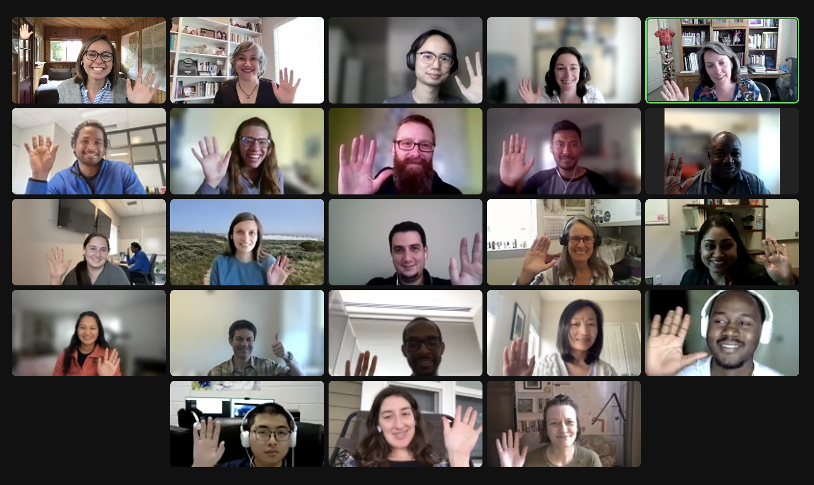
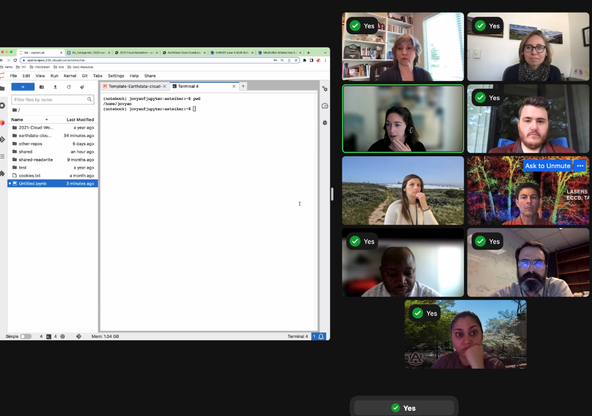

Exciting Progress for Research Teams using NASA Earthdata in the Cloud: 2023 NASA Openscapes Champions Wrap-up
From April-June 2023, the NASA Openscapes project team co-led the second Champions Cohort with NASA Mentors who span seven Distributed Active Archive Centers (DAACs). The Cohort included seven research teams from academia and government that were curious about working with NASA Earthdata in the Cloud. Cloud migration takes time, so in the ten weeks we worked together, the focus was on planning the transition, identifying resources, and initial experiments using the Cloud through our 2i2c JupyterHub. All of this work is underpinned by Openscapes and NASA’s commitment to Open science practices. This cohort is funded by NASA and is part of our NASA Openscapes Framework project.
Quick links:
- Cohort webpage: https://nasa-openscapes.github.io/2023-nasa-champions/
NASA Champions Cohort Overview
The NASA Openscapes Project is a multi-year project to develop a cohesive approach to building Cloud migration capacity across NASA Earthdata from NASA’s Earth Observing System Data and Information System (EOSDIS) Distributed Active Archive Centers (DAACs) and the research teams that the DAACs support. We do this through supporting a community of NASA DAAC mentors, who are primarily dedicated to user support. This community has learned together how to use NASA Earthdata on the Cloud. They have translated that experience into a series of Hackathons, workshops, self-paced tutorial material in the NASA Earthdata Cloud Cookbook, and through an intensive, 10-week program: NASA Openscapes Champions.
Cloud migration can often have a steep learning curve and feel overwhelming. The NASA Openscapes Champions Cohort brings together research teams that are interested in migrating their existing NASA Earthdata workflows to the Cloud with NASA DAAC Mentors who are extremely knowledgeable about the data they serve and the initial pathways to using that data on the Cloud. This Cohort provides a common, welcoming place for teams to learn together, ask questions about using the Cloud, plan their transition, and do initial experimentation using the NASA Openscapes 2i2c JupyterHub. Because this is a more intensive experience, the teams build collaborative partnerships with DAAC mentors, and the mentors can more quickly identify and work on solving issues that will make Cloud migration easier for many more users. We led the first NASA Openscapes Champions Cohort in 2022.
The second NASA Openscapes Champions Cohort ran formally in April-June 2023 with seven research teams interested in a wide variety of NASA Earthdata and various stages of Cloud technology familiarity. You can learn more about their research below.

Zoomie (♥️) of some researchers in the 2023 NASA Openscapes Champions Cohort
Together as a Champions Cohort, these teams discussed what worked and didn’t work as they migrated workflows to the Cloud, focusing on collaboration and open science. We met as a cohort five times over two months on alternating Wednesdays. Each cohort call included a welcome and code of conduct reminder, two teaching sessions with time for reflection in small groups or silent journaling and group discussion, before closing with suggestions for future team meeting topics (“Seaside Chats”), Efficiency Tips, and Tips. All topics and the slides presented are shared on the 2023 Cohort page. Additional coworking sessions were scheduled on alternate weeks, where researchers could work quietly, screenshare to ask questions or meet with their team to discuss further. In addition, the teams have access to Openscapes’ 2i2c Jupyter Hub, which will continue for the next year.
Thanks to the NASA Openscapes Mentors for supporting the Champions and for their contributions to the curriculum! In particular, the NASA Openscapes Champions Curriculum had significant additions:
Andy Barrett from the National Snow and Ice Data Center (NSIDC) created a version of Data Strategies for Future Us that is applicable to gridded, remotely sensed data. Slides are here: https://nsidc.github.io/data_strategies_for_future_us/data_strategies_slides#/title-slide
Amy Steiker and Luis Lopez from NSIDC and Alexis Hunzinger from Goddard Earth Sciences Data and Information Services Center (GES DISC) refactored the Coding Strategies for Future Us to be tailored to NASA Earthdata search, the earthaccess python library, and experiences from teams at Goddard DAAC (GES DISC) that have learned to use the Cloud.
Amy Steiker from NSIDC designed and led the Earthdata Cloud Clinic! This was a hands-on 1-hour clinic that allowed teams to get familiar with the 2i2c JupyterHub, and practice finding and accessing NASA Earthdata via direct access through two methods from a Jupyter Notebook: earthaccess and Harmony-py services. This material can be found in the cookbook here -> https://nasa-openscapes.github.io/earthdata-cloud-cookbook/examples/Earthdata-cloud-clinic.html

Screenshot of Amy Steiker teaching the Earthdata Clinic. We used Zoom’s “green check mark” feature during pauses for people to indicate that they had completed a step.
- Cassie Nickles screenshared and introduced the Earthdata Cookbook and NASA Earthdata Cloud cheatsheets in the final cohort call to help teams understand available resources moving forward.
Gaining Cloud Momentum
Part of the Openscapes Champions approach is that teams decide what to work on. The teams devoted at least 8 hours a month to focus on their workflows, learning, and collaborating within and across their teams. During this time, they thought through and discussed their current NASA Earthdata workflows and planned and experimented with transitioning their workflows to the Cloud using Openscapes’ 2i2c-hosted Jupyter Hub as a first step. As in other Openscapes Champions cohorts, teams also realized the power of Open science and that open is a spectrum that includes considering future us - potentially just you or your group in 3 months.
We saw teams and the NASA DAAC mentors make significant progress in migrating workflows to the Cloud. A few highlights from teams that participated in the cohort included:
The Geoweaver team made a Python version of Geoweaver, pyGeoweaver, and contributed a tutorial to the EarthData Cloud Cookbook!
The CLIMCAPS Team did initial experiments with earthaccess. They found it was a factor of 2 faster, but expected a more significant increase in speed.
The HEAT Team was able to access data through earthaccess and bring it into Geopandas. They have additional work to do to use the Cloud to process data to connect to other services like GIOVANNI.
The S-MODE Team made initial progress using earthaccess with S-MODE data. They had challenges being able to only access one file at a time.
The Hydrometeorology and GESTAR Teams connected with our MathWorks contacts and made progress accessing NASA Earthdata in the Cloud via MATLAB. We’ve submitted a talk at the AGU fall conference about this, stay tuned!
The LASERS Team had experience with Google Earth Engine and spent some time trying to use AWS for the same tasks. They also noted how their Cloud collaboration was a pathway toward more open, collaborative work across their team.
Onward!
If our NASA Openscapes Champions Cohort is any indication, the NASA Earthdata community is making significant strides in building capacity to use Cloud resources, and the transition is successfully happening. While the cohort is officially over, these teams are just at the beginning, and we are excited to follow their results. Several Champions will participate in Carpentries Instructor Training this summer; The Carpentries is a nonprofit that teaches introductory coding skills around the world, Instructor Training is not coding-specific, but it is a pedagogical approach to teaching technical topics. As part of our NASA grant, we partner with The Carpentries and are excited to extend this opportunity to Champions since many of them mentioned wanting to contribute more to open science efforts going forward.
We are grateful to this Champion Cohort’s early adopter spirit, their time and effort to make this migration and all of the feedback and input they provided. They all participated in this cohort, knowing that while this was the second Cohort, they were among the first research teams to use NASA Earthdata in the Cloud. What they learned and shared will make it easier for subsequent teams to make this same shift. Many teams articulated this spirit of Open leadership, explicitly asking how they could help other teams. We also learned so much, and we will refine the NASA Openscapes Champions as we plan for our next cohort and our work with the DAAC mentors in the future years of our project.
About the NASA Openscapes Champions Teams
CLIMCAPS Team We use a number of NASA products in CLIMCAPS to stabilize and improve the retrieval of atmospheric profiles from hyperspectral infrared measurements. These include (i) MERRA-2 and (ii) the MEASURES CAMEL dataset. We distribute CLIMCAPS as Level 2 and Level 3 files to a range of different users. Our research focuses on maintaining/improving the CLIMCAPS algorithm and collaborating with users to improve and tailor CLIMCAPS data products. Since releasing the CLIMCAPS record via GES DISC in 2020 (2002–present), we have seen our user base grow. We have had the chance to collaborate with many groups. This gave us the opportunity to address their questions, clarify the product and help prepare custom Level 3 files that are tailored to target applications. The CLIMCAPS Level 2 product contains many different types of uncertainty metrics that can be used to filter and refine data usage. We would absolutely love the opportunity to make these workflows, that we’ve helped develop for users, more widely available. I have no doubt that other communities will find it useful also, and we want, in turn, to learn from others. Experience is teaching us that good science happens when developers and scientists collaborate together. And this is why I think Cloud-based workflows is one of the most exciting technology advances in recent years.
HEAT (HydroEnergy Analytics Team) There is an increasing global demand for food, water and energy mainly driven by rapid urbanization, rising population, economic growth and regional conflicts. As water, energy and food are interconnected and are part of a system, we will adopt an integrated Water-Energy-Food Nexus (W-E-F) approach to examine the interdependence of water, energy and food and the impacts of climate change on water, energy, and food consumption in Nepal. Nepal, a country located in Southeast Asia, presents a unique case, where the datasets are either sparse, extremely challenging to obtain, or unavailable. Assessing W-E-F Nexus is particularly challenging due to gaps in datasets and lack of long-term observations. NASA’s Earth Observation data can be used to overcome these obstacles by providing ongoing long-term observations of the planet at various spatial and temporal resolutions, effectively filling in the gaps in the data. Our approach involves utilizing data-driven techniques to analyze the W-E-F nexus at watershed level in Nepal. Specifically, we plan to combine NASA’s Earth Observation data with hydropower generation, agricultural production and socioeconomic data in Nepal to gain a more comprehensive understanding of the W-E-F nexus in the region. We have identified several potential datasets, and will address two major questions in the cohort: 1) How has water availability, hydropower generation and consumption, demographics, crop yield changed in Nepal over the last 20 years? 2) What is the relationship between change in hydropower generation with respect to changes in hydrometeorology and demographics? Outcome: We will develop a Jupyter Notebook that outlines a comprehensive method for generating outputs from data acquisition using a Cloud environment. This end-to-end process will be clearly described in the notebook, providing an intuitive and efficient workflow that can be replicated by others adhering to the open science principles. Through this effort, we aim to facilitate the use of Cloud computing in data analysis and dissemination, streamlining the research process and enabling more efficient collaboration among researchers. The final Jupyter Notebook will be shared in the collaborative space (GitHub). The pain points encountered from an interdisciplinary user’s perspective will be documented.
LASERS Team Our team has expertise in assessing vegetation biophysical parameters using data from all platforms, terrestrial, airborne and spaceborne. We have experience in using the Google Earth Engine and ICESat-2 data to produce gridded-maps of canopy height and canopy cover and we have produced open science software tools for displaying and labeling ICESat-2 photons, e.g., PhotonLabeler, or Waveformlidar, both available on GitHub. Our research efforts of producing Landsat-resolution gridded maps of canopy height, canopy cover, and biomass, are limited in scale by using local computing and data download-intensive approaches. Educational accounts on Cloud-based platforms, such as GEE, have limitations for data availability, data volume and modeling options, and the learning curve and cost for migrating to platforms like AWS, have their own challenges. As such, we hope that by joining NASA’s Openscapes we’ll remove barriers to producing timely vegetation products at continental and global scales to better answer pressing questions in ecology while empowering students and young scientists to use Cloud-computing and open science tools. We use ICESat-2 data, Landsat, and derived data to characterize vegetation structure and estimate biophysical parameters, such as height, cover, biomass. For producing gridded maps of vegetation parameters at scales larger than regional, e.g., continental and global, the volume of data download and processing time are hampering the workflow, therefore we intend to migrate the process to the Cloud.
Geoweaver Team Our group has a lot of interests and collaboration history with DAACs and the Earth science community, and we are dedicated to developing Geoweaver to support Earth science teams as well as DAAC staff (data pipeline, ingestion, migration, analytics) to be productive, and their work are tangible and FAIR for other scientists to reproduce. We use NASA data as input variables to AI models to train the models with the ability to discover Earth insights in time and be actionable. We are very interested in migrating the workflow into the Cloud because that is where the data is and there are data retrieval and I/O steps in our workflows which are slow if they are executed outside the Cloud. By migrating workflows into Cloud, we want to experiment and showcase that: (1) scientists can easily switch from their personal computing environments to Cloud environment seamlessly and effortlessly using Geoweaver; (2) the hybrid collaboration environment provided by NASA and researchers’ home institution, including their laptops, can work together for one single workflow (/purpose) without under-using (wasting) resources; (3) make the building-testing-debugging iteration more quick, useful, transparent, and of course FAIR (Geoweaver records everything people did no matter where) and help scientists get serious about workflow run history sharing in a single zip file; (4) show that Geoweaver is a click-button solution if scientists want to deploy their AI workflows into operational services to run periodically like every day.
S-MODE Team Our group has a wide range of professional experience, ranging from graduate students to PI’s. Everyone in our group is interested in exploring open-source workflows on the Cloud and building machinery to analyze a variety of data from S-MODE (Sub-Mesoscale Ocean Dynamics Experiment). Our collaboration will benefit the general S-MODE community as we plan on sharing our findings. Our overall goal is to foster a data analysis community for S-MODE by creating machinery that can be used by many research groups. From Mackenzie: “I work with NASA funded saildrone data to investigate submesoscale dynamics of the upper ocean and air-sea interactions. Specifically, I am working with saildrone datasets from the Atlantic Tradewind Ocean Atmosphere Interaction Campaign (ATOMIC) and S-MODE. I analyze the saildrone data using python and Jupyter notebooks. Additionally, I use satellite data from SMAP, Aquarius, and SWOT to provide environmental context on where the saildrone data was collected. I currently download most of the datasets and keep them on my university’s HPC system. I use open-source software to analyze the data, which includes python packages such as Xarray, numpy, matplotlib, cartopy, and pandas.”
Hydrometeorology Team We are highly motivated to migrate our ground validation workflow for the NASA GPM - Global Precipitation Measurement product to the Cloud. With over a decade of experience working with ground weather radar products and developing comprehensive workflows for ground validation work, we are eager to streamline and optimize our process. We use NASA data in three areas. First, we conduct cross-validation between NASA GPM products and NOAA ground weather radar products. Second, we create synergy of multiple NASA remote sensing measurements to achieve better precipitation product. Third, we apply NASA remote sensing data to monitor and forecast natural hazards such as flash flooding, drought, tornado, etc. Our team recognizes the numerous benefits that Cloud computing resources can provide. Firstly, Cloud services are highly scalable and can easily accommodate changes in demand from other scientists. Secondly, by migrating our workflow to the Cloud, we can automate many tasks and improve efficiency while reducing the risk of errors or delays. Thirdly, Cloud computing resources are accessible from anywhere with an internet connection, making it easier to collaborate with other scientists. Lastly, Cloud services can be integrated with other tools and services, such as machine learning or data analytics platforms, enhancing the overall capabilities of the workflow. We strongly believe that ground validation efforts require a global approach, and migrating our ground validation workflow to the Cloud can greatly enhance our ability to collaborate with other scientists and improve our work on a global scale.
GESTAR Team We conduct sensor calibration, mission support and support data applications. I work in the GESTAR2 group (Goddard Earth Sciences Technology and Research II) at UMBC (University of Maryland, Baltimore County). Our team, lead by Dr. Strow with us has been responsible for the development of the CHIRP (Climate Hyperspectral Radiance Product) now being hosted on GES DISC DAAC and intimately concerned with the Aqua AIRS, NOAA CrIS MetOP IASI sensors so that their data can be used for climate studies. We are heavily invested in Matlab with C and Fortran libraries. We deal with 10s of TB data almost daily using the HPC at UMBC - a fantastic resource. There is an interest and growing incentive to migrate to the Cloud, but for us the capital (of effort) to ‘re-locate’ is very significant. We need to understand the cost/benefit in our situation. There is a very steep learning curve and very little time available and there isn’t a one solution to fit all.